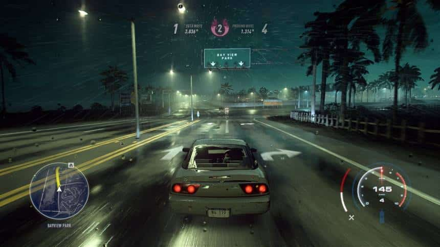

História de Need for Speed
Os jogos de corridas possuem vários aspectos a serem avaliados e a história nem sempre é essencial para eles fazerem sucesso. Entretanto, Need for Speed Heat, assim como seus antecessores, faz questão de ter uma história e traz até mesmo missões para progredir nela.
Assim, você se encontra no papel de um piloto novato, que acaba de chegar em Palm City e quer fazer a sua história nas ruas. Para isso, o jogo inclui dois tipos de corridas, em que as que acontecem de dia são legalizadas e, as de noite são ilegais, sendo esta última onde a história do jogo acaba se concentrando.
Já o tenente Frank Mercer é um dos policiais responsáveis por manter a ordem em Palm City e abre o jogo com uma cena onde mostra que ele está perdendo a sua paciência com as corridas ilegais, prometendo não oferecer vida fácil para quem for pego nelas. Para isso, é claro, a polícia contará também com carros de ponta e algumas outras tecnologias, que devem atrapalhar o sonho do protagonista.
Por sua vez, você que acaba de chegar na cidade, conhece a Ana, a irmã de um ex-corredor e atual mecânico da cidade, responsável pela oficina da família Rivera. Como é de praxe da série, Ana vai lhe falar que quer fazer sucesso nas corridas e lhe convidará para fazer parte de sua equipe, mas que será preciso conquistar o respeito nas ruas correndo contra seus maiores adversários. Já o seu mencionado irmão é quem vai lhe dar uma ajuda inicial e te ajudar com os upgrades a serem feitos no carro, também lhe oferecendo um primeiro veículo por um preço mais em conta, mas sem ser muito potente.
De forma geral, a história de Need for Speed Heat é bem clichê e não inova muito, trazendo assuntos que já vimos nos outros games da série, mas com novas pessoas para a trama. As falas dos personagens do jogo também não possuem um grande roteiro por trás, mas isso não chega a ser um ponto negativo. Inclusive, algo um pouco chato que ocorre, é que quando você não segue as missões, muitas vezes os personagens te ligam para falar algo que já foi dito anteriormente.
Apesar de ser uma história bem básica, o ritmo do jogo acaba sendo ditado por ela poucas vezes, já que você tem diversos eventos que ocorrem na cidade sem ter que assistir as animações ou prestar atenção nas falas. Já uma parte um pouco mais irritante, acaba sendo quando é necessário seguir outros pilotos, que parecem não estarem muito a fim de correr pelas ruas e são os únicos que sabem o caminho a ser seguido.
Assim, apesar de a história não ser digna de nenhum prêmio, ao menos ela te prende o suficiente para saber o que acontecerá no fim e não atrapalha o andamento do jogo, já que as corridas que acontecem em paralelo são o principal foco dele.
